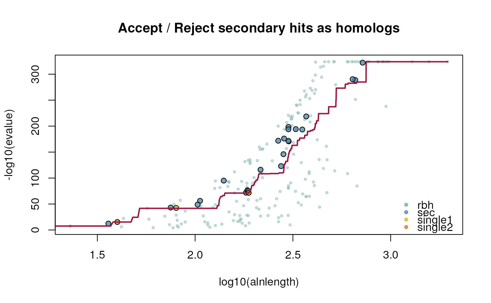
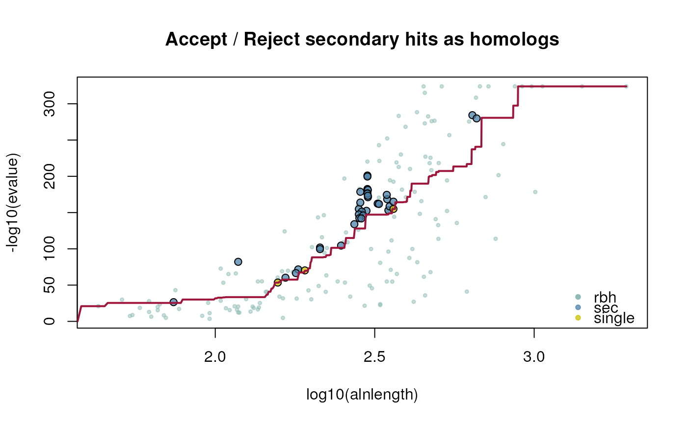

This function calculates (conditional-)reciprocal best hit (CRBHit) pairs from two AA fasta files. Conditional-reciprocal best hit pairs were introduced by Aubry S, Kelly S et al. (2014). Sequence searches are performed with last Kiełbasa, SM et al. (2011) [default] or with mmseqs2 Steinegger, M and Soeding, J (2017) or with diamond Buchfink, B et al. (2021). If one specifies aafile1 and aafile2 as the same input a selfblast is conducted.
aafile2rbh(
aafile1,
aafile2,
searchtool = "last",
lastpath = paste0(find.package("CRBHits"), "/extdata/last-1453/bin/"),
lastD = 1e+06,
mmseqs2path = NULL,
mmseqs2sensitivity = 5.7,
diamondpath = NULL,
diamondsensitivity = "--sensitive",
diamondmaxtargetseqs = "-k0",
outpath = "/tmp",
crbh = TRUE,
keepSingleDirection = FALSE,
eval = 0.001,
qcov = 0,
tcov = 0,
pident = 0,
alnlen = 0,
rost1999 = FALSE,
filter = NULL,
plotCurve = FALSE,
fit.type = "mean",
fit.varweight = 0.1,
fit.min = 5,
threads = 1,
remove = TRUE
)aa1 fasta file [mandatory]
aa2 fasta file [mandatory]
specify sequence search algorithm last, mmseqs2 or diamond [default: last]
specify the PATH to the last binaries [default: /extdata/last-1453/bin/]
last option D: query letters per random alignment [default: 1e6]
specify the PATH to the mmseqs2 binaries [default: NULL]
specify the sensitivity option of mmseqs2 [default: 5.7]
specify the PATH to the diamond binaries [default: NULL]
specify the sensitivity option of diamond [default: --sensitive]
specify the maximum number of target sequences per query option of diamond [default: -k0]
specify the output PATH [default: /tmp]
specify if conditional-reciprocal hit pairs should be retained as secondary hits [default: TRUE]
specify if single direction secondary hit pairs should be retained [default: FALSE]
evalue [default: 1e-3]
query coverage [default: 0.0]
target coverage [default: 0.0]
percent identity [default: 0.0]
alignment length [default: 0.0]
specify if hit pairs should be filter by equation 2 of Rost 1999 [default: FALSE]
specify additional custom filters as list to be applied on hit pairs [default: NULL]
specify if crbh fitting curve should be plotted [default: FALSE]
specify if mean or median should be used for fitting [default: mean]
factor for fitting function to consider neighborhood [default: 0.1]
specify minimum neighborhood alignment length [default: 5]
number of parallel threads [default: 1]
specify if last result files should be removed [default: TRUE]
List of three (crbh=FALSE)
1: $crbh.pairs
2: $crbh1 matrix; query > target
3: $crbh2 matrix; target > query
List of four (crbh=TRUE)
1: $crbh.pairs
2: $crbh1 matrix; query > target
3: $crbh2 matrix; target > query
4: $rbh1_rbh2_fit; evalue fitting function
Aubry S, Kelly S et al. (2014) Deep Evolutionary Comparison of Gene Expression Identifies Parallel Recruitment of Trans-Factors in Two Independent Origins of C4 Photosynthesis. PLOS Genetics, 10(6) e1004365.
Kiełbasa, SM et al. (2011) Adaptive seeds tame genomic sequence comparison. Genome research, 21(3), 487-493.
Rost B. (1999). Twilight zone of protein sequence alignments. Protein Engineering, 12(2), 85-94.
## compile last-1453 within CRBHits
CRBHits::make_last()
## load example sequence data
athfile <- system.file("fasta", "ath.aa.fasta.gz", package="CRBHits")
alyfile <- system.file("fasta", "aly.aa.fasta.gz", package="CRBHits")
## get CRBHit pairs
ath_aly_crbh <- aafile2rbh(
aafile1=athfile,
aafile2=alyfile,
plotCurve=TRUE)

dim(ath_aly_crbh$crbh.pairs)
#> [1] 211 3
## get classical reciprocal best hit (RBHit) pairs
ath_aly_rbh <- aafile2rbh(
aafile1=athfile,
aafile2=alyfile,
crbh=FALSE)
dim(ath_aly_rbh$crbh.pairs)
#> [1] 181 3
## selfblast
ath_selfblast_crbh <- aafile2rbh(
aafile1=athfile,
aafile2=athfile,
plotCurve=TRUE)

## see ?cds2rbh for more examples